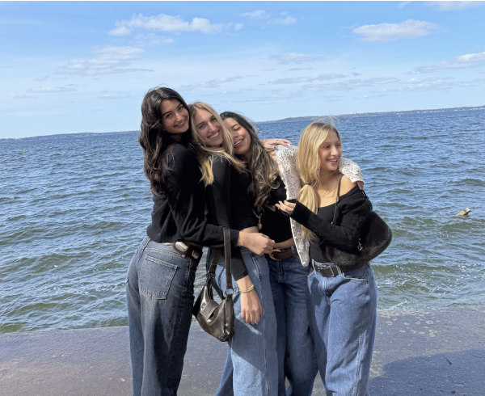

My Motivation
Gratitude keeps me grounded, while the desire to grow, prove myself, and make my future self proud keeps me moving forward.
Fransheska Stay.
From my roots to my goals, here’s a look at the experiences that have shaped me.
Get to Know MeGratitude keeps me grounded, while the desire to grow, prove myself, and make my future self proud keeps me moving forward.
No matter where I am in life, I know I can always count on my mom. Her sacrifices, support, and guidance have played such an important role in shaping the person I am today.
From spending time with friends to thrifting and being around animals, I find happiness in the little things. These moments give me a break, help me recharge, and bring balance to my life.

Being a student at the University of Wisconsin–Madison has become a huge part of my journey so far. When I first started college, I was on the pre-med track and wasn’t really sure what career path I wanted to take. As I was introduced to different opportunities, I realized that my interests were leaning more toward business, but I still wanted psychology to be a part of my education.
That combination eventually led me to pursue a career in Human Resources, where I can bring together my interest in people and business. Along the way, I’ve met so many amazing people, including the friends pictured here who have become my support system at school.
Coming to Wisconsin wasn’t an easy decision at first because I wanted to stay close to home and my family. But I kept reminding myself, “If it doesn’t make you uncomfortable, it won’t allow you to grow.” Looking back, stepping outside of my comfort zone has become one of the most meaningful parts of my college experience.
“Everything will work out and you're not behind.”
Waking up early, working out, grabbing my morning coffee, looking cute for class, spending time with my best friends, and ending the day in bed early.